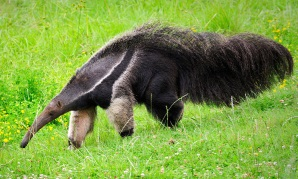
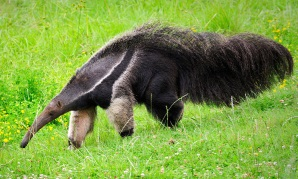

Random Facts:
Favorite Animal:
Giant Anteater
Favorite Shape:
Triangle

Favorite Books:
Catch-22 and Little Children

Favorite Shoe:
Soccer Cleats!

Favorite Bar Game:
Billiards


I am a New York City native who grew up riding the subway and have always been an avid soccer player. After graduating from Syracuse University in 2012 with degrees in Anthropology and Italian, I spent 18 months traveling to over 20 countries across three continents before returning to NYC and working at a non-profit for a year. In May 2015 however, I yearned to return to the backpacking culture, and I spent the summer managing the only hostel on Nantucket Island.
Giant Anteater
Triangle
Catch-22 and Little Children
Soccer Cleats!
Billiards